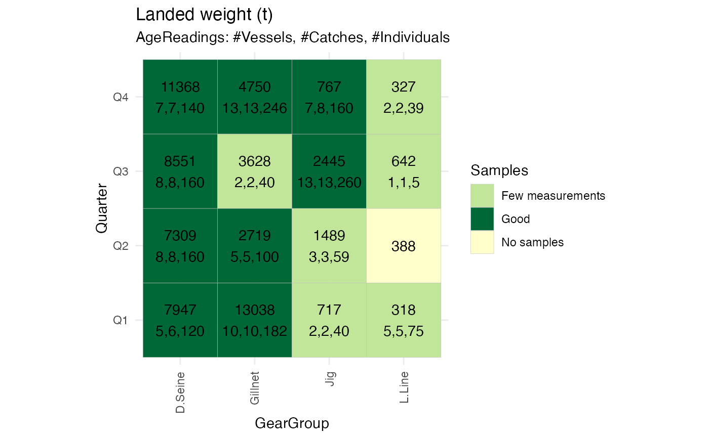
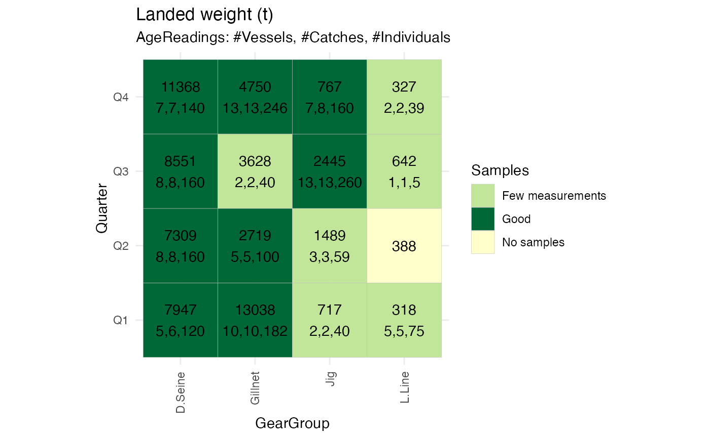

Makes 'cell plot' overview of samples and landings.
Usage
PlotSamplingOverviewCell(
ReportFdaSamplingData,
ColumnVariable,
Measurement = c("AgeReadings", "LengthMeasurements", "WeightMeasurements"),
UseDefaultColorSettings = T,
MinVessels = integer(),
MinCatches = integer(),
MinMeasurements = integer(),
ColorNoSamples = character(),
ColorFewMeasurements = character(),
ColorFewCatches = character(),
ColorFewVessels = character(),
ColorGoodSampling = character(),
TextSize = numeric()
)Arguments
- ReportFdaSamplingData
ReportFdaSamplingDatawith sampling report to plot- ColumnVariable
The grouping variable in 'ReportFdaSamplingData' that should be used for columns in the cell plot
- Measurement
The kind of fish measurement that should be used to determine the color of a cell. Defaults to AgeReadings.
- UseDefaultColorSettings
Logical, whether to use default color settings or the value specified for the function parameters MinVessels, MinCatches, MinMeasurements, ColorNoSamples, ColorFewCatches, ColorFewVessels, ColorGoodSampling
- MinVessels
The minimum number of vessels sampled for a quality "Good" coloring of a cell. Defaults to 2.
- MinCatches
The minimum number of catches sampled for quality "Good" or "Few vessels" coloring of a cell. Defaults to 2.
- MinMeasurements
The minimum number of measurements (parameter 'Measurement') for quality "Good", "Few vessels" or "Few catches" coloring of a cell. Defaults to 100.
- ColorNoSamples
Color to use for cells not sampled. Defaults to #ffffcc.
- ColorFewMeasurements
Color to use for cells with few measurements. Defaults to #c2e699.
- ColorFewCatches
Color to use for cells with Few Catches. See details. Defaults to #78c679.
- ColorFewVessels
Color to use for cells with Few Vessels See details. Defaults to #31a354.
- ColorGoodSampling
Color to use for cells with Good sampling. See details. Defaults to #006837.
- TextSize
size of text in cellplot. If not provided, a suitable size will be calculated.
Details
Each part or 'cell' of the fishery identified by the groupingvariables of a ReportFdaSamplingData report
is visualised as a cell on a two dimensional grid, and annotated with information about how much was landed in each 'cell'.
Cells that has been sampled are also annotated with a triplet (#vessels, #catches, #individuals) indicating the number of
sampled vessels, catches and individuals. The cells are also color coded to reflect how well they are sampled.
The visualisation gives an overview of which part of the fishery has few samples, and may suggest ways to group or post-stratify variables for estimation. By extension it also suggests how supplemental sampling can be improved, for instance by revealing where a small extra sampling effort prevents the need for grouping or post-stratifying. The plot does not provide a direct visualisation of the efficiency of the sampling. Efficient sampling may well leave many cells unsampled, as the activity (e.g. volume landed) may be very different between cells.
The color coding indicates five categories of sampling depending on how many vessels, catches, and individuals are sampled in the cell. #' The coloring is controlled by the arguments 'MinVessels', 'MinCatches', and 'MinMeasurements':
- Good
Cell has sufficient number of individuals, catches and vessels sampled.
- Few vessels
Cell has sufficient number of individuals and catches sampled, but not sufficient number of vessels
- Few catches
Cell has sufficient number of individuals sampled, but not sufficient number of catches
- Few measurements
Cell has sufficient number of individuals sampled, but not sufficient number of catches
- No samples
Cell is not sampled
- No Landings
Cell is sampled, but there are no official landings recorded for the cell.
See the documentation for ReportFdaSampling for an explanation for why the category 'No landings' may occur.
The thresholds for what is considered sufficient sampling of vessels, catches and individuals, respectively,
is configured with the arguments 'MinVessels', 'MinCatches', 'MinMeasurements'
Colors are specified by ggplot convention and may be specified as a name (e.g. 'red'), a number (e.g. '2') or a hex-code (e.g. '#78c679').
See also
Provide data for this plot with ReportFdaSampling
Examples
#plot to inspect sampling og key covariate (spatial, temporal, gear)
samplingReport <- RstoxFDA::ReportFdaSampling(RstoxFDA::StoxBioticDataExample,
RstoxFDA::StoxLandingDataExample,
GroupingVariables = c("Quarter", "GearGroup", "Stratum"))
PlotSamplingOverviewCell(samplingReport, ColumnVariable = "Stratum")
 #plot to suggest regrouping categorical variables for fixed effect configuration in Reca
fixedEffectReport <- RstoxFDA::ReportFdaSampling(RstoxFDA::StoxBioticDataExample,
RstoxFDA::StoxLandingDataExample,
GroupingVariables = c("Quarter", "GearGroup"), Unit = "ton")
PlotSamplingOverviewCell(fixedEffectReport, ColumnVariable = "GearGroup")

#same plot with regroping of quarter (Period)
fixedEffectReport <- RstoxFDA::ReportFdaSampling(RstoxFDA::StoxBioticDataExample,
RstoxFDA::StoxLandingDataExample,
GroupingVariables = c("Period", "GearGroup"), Unit = "ton")
PlotSamplingOverviewCell(fixedEffectReport, ColumnVariable = "GearGroup")
#plot to suggest regrouping categorical variables for fixed effect configuration in Reca
fixedEffectReport <- RstoxFDA::ReportFdaSampling(RstoxFDA::StoxBioticDataExample,
RstoxFDA::StoxLandingDataExample,
GroupingVariables = c("Quarter", "GearGroup"), Unit = "ton")
PlotSamplingOverviewCell(fixedEffectReport, ColumnVariable = "GearGroup")

#same plot with regroping of quarter (Period)
fixedEffectReport <- RstoxFDA::ReportFdaSampling(RstoxFDA::StoxBioticDataExample,
RstoxFDA::StoxLandingDataExample,
GroupingVariables = c("Period", "GearGroup"), Unit = "ton")
PlotSamplingOverviewCell(fixedEffectReport, ColumnVariable = "GearGroup")